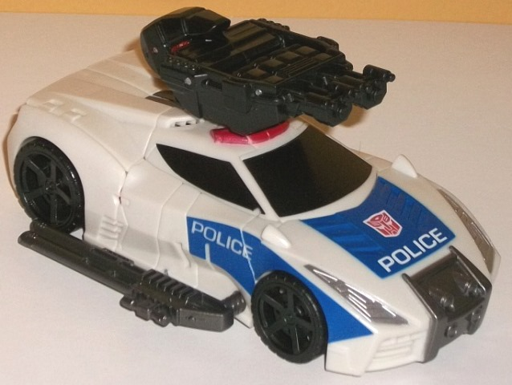
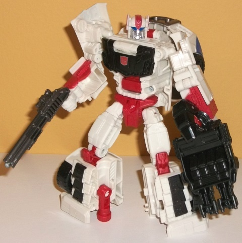
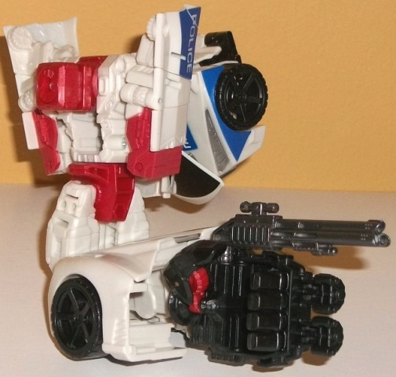
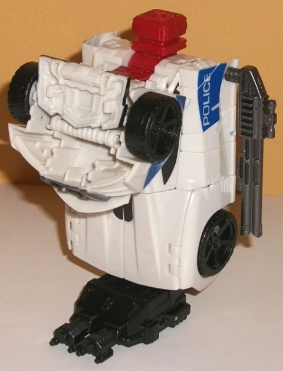

Allegiance
: Autobot
Size
: Deluxe
Difficulty of Transformation to Robot:
Easy
Difficulty of Transformation to Leg
:
Very Easy
Difficulty of Transformation to Arm
:
Easy
Color Scheme
: Off-white, black,
moderately dark red, and some moderately dark blue, metallic gunmetal gray,
and silver
Rating
: 9.1
(NOTE: Because this is a repaint, this is not a full-blown review. This mainly covers any changes made to the mold and the color scheme, and merely compares it to Combiner Wars Dead End. For a review on the mold itself, read the review of Combiner Wars Dead End here .)


Streetwise's alternate
mode is a police car that has a slightly futuristic feel to it. The blue
deco on the front part of the vehicle mode helps to break up all the off-white
quite well, as do the black paint apps on the windows (yes, even the rear
window!). The metallic gunmetal gray and silver headlights look good, but
otherwise Streetwise's vehicle mode is way too underdetailed on the back
end, with the rear window being the only real paint app. (That said, the
plastic breakup is such that the red plastic on the knees shows up on the
back end partially as taillights and the tailpipe.) In robot mode, Streetwise's
colors are broken up a bit more with a moderately dark red plastic and
paint making a major appearnace on the lower arms, combiner peg in the
chest, and in the knees, waist, and exhaust pipe. The black-painted chest
plate helps to make him look like his G1 toy a little-- as that was where
part of the windshield was on that toy-- but honestly, other than that
and the head, the toy looks little like Streetwise in either mode other
than the major strokes (robot-to-police car). The added red here and the
added blue in vehicle mode help him to stand out on his own more, which
is great given how similar his G1 scheme was to Prowl's-- which, spoiler
alert, this toy gets remolded slightly into further down the line. Beyond
the red additions and the black chest, there's also some nice black details
on the lower legs, and the head is done up VERY nicely with red antennae
and forehead crest, blue eyes, and a silver mouth with a rather neutral
(or perhaps slightly sad?) expression on his face. From certain angles,
the blue paint apps from Streetwise's vehicle mode can add a little more
color, but although it helps some, there's still too much off-white in
robot mode. Yes, the colors are broken up more, but too much of the base
plastic colors are still off-white.


Like with
First
Aid
, Streetwise uses the same exact transformation and general design
as an earlier Combiner Wars figure-- in this case, Dead End-- but he's
been almost entirely "reshelled", especially in his vehicle mode. The only
parts that are the same between the two toys-- beyond some minor connector
pieces-- are parts of the lower arms and fists, the combiner peg, the hips,
the upper legs and knees, the hand/foot/gun weapon, and the exhaust pipe
piece. Everything else has completely new mold detailing on it, even if
the general feel of the toy is the same as Dead End. The mold detailing
is rather smooth for the most part, particularly on the back end of the
vehicle mode/lower robot legs; on the front end of the vehicle mode, there's
some noticeable vents on the hood, rather over-detailed & stylized
headlights, and a rather nifty-looking bumper piece that looks like it
has four headlights, with a bit of unpainted grill detailing next to it.
The sirens are rather under-sized and a bit too angular and swept back--
again, making the toy look a bit futuristic. In robot mode, the new head
is a wonderful, more-detailed update of his G1 face with better proportions
and more colorful detailing. The detailing on his robot arms is mostly
the same, but the fake windshield-chest details look great, and the ridged
front of the lower legs is a great, individualistic detail that helps differentiate
him more from Dead End. For a new weapon, Streetwise comes with a triple-barrel
shotgun that can double as a tailpipe in vehicle mode-- definitely a better
weapon than Dead End's beat-down stick. All articulation on Streetwise
is identical to that of Dead End's.
Combiner Wars Streetwise
is a surprisingly near-complete overhaul of the Dead End mold, and shares
most of that mold's positives in being one of the best CW deluxe molds
there is. However, the vehicle mode's sleekness and angularity is in some
respects a bit off for a police car, and just suits a regular sportscar
like Dead End a bit more. Streetwise's color scheme, while not bad, is
also a bit bland when compared to Dead End's, with a bit too much unpainted
off-white plastic in both modes. Thus I'd recommend Dead End more out of
the two, but hey... you can't complete Defensor without Streetwise, right?
Pre-mission psych-screening report
by Rung, Autobot Psy-Ops Specialist
:
Streetwise lives his live by a pretty
simple code: "Interception and incapacitation." It's no surprise that his
chosen Earth vehicle mode is a police cruiser. Streetwise excels at tracking
down and catching up to his targets. His overcharged engine allows him
to reach land speeds of 250 miles per hour, although using his top speed
drains his Energon reserves at an alarming rate. In combat, he excels at
subduing opponents rather than destroying them-- his pump-action Energon
blaster has a blinding muzzle flare, and his air compressor cannons can
knock even the sturdiest opponent flat. With fellow Protectobots forms
Defensor.
CONCLUSION: Cleared for mission.
HISTORY (extracted from compulsory
biographical download):
Streetwise spent the early part of the
Great War as half of a long-range sniper team. His keen vision and renowned
tracking skills made him the best spotter on the front lines. Centuries
of target elimination wore on his spark, though, and his switch to the
Protectobots is in hopes of finding better ways to settle the ongoing conflict.
Forms either an arm or leg of Defensor, the combined form of the Protectobots.
Review by Beastbot